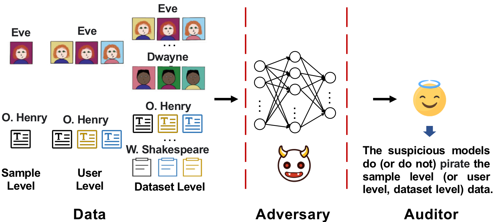

Abstract
As the implementation of machine learning (ML) systems becomes more widespread, especially with the introduction of larger ML models, we perceive a spring demand for massive data. However, it inevitably causes infringement and misuse problems with the data, such as using unauthorized online artworks or face images to train ML models. To address this problem, many efforts have been made to audit the copyright of the model training dataset. However, existing solutions vary in auditing assumptions and capabilities, making it difficult to compare their strengths and weaknesses. In addition, robustness evaluations usually consider only part of the ML pipeline and hardly reflect the performance of algorithms in real-world ML applications. Thus, it is essential to take a practical deployment perspective on the current dataset copyright auditing tools, examining their effectiveness and limitations. Concretely, we categorize dataset copyright auditing research into two prominent strands: intrusive methods and non-intrusive methods, depending on whether they require modifications to the original dataset. Then, we break down the intrusive methods into different watermark injection options and examine the non-intrusive methods using various fingerprints. To summarize our results, we offer detailed reference tables, highlight key points, and pinpoint unresolved issues in the current literature. By combining the pipeline in ML systems and analyzing previous studies, we highlight several future directions to make auditing tools more suitable for real-world copyright protection requirements.
Resources
Citation
@inproceedings{DZCZSCCZ25,
author = {Linkang Du and Xuanru Zhou and Min Chen and Chusong Zhang and Zhou Su and Peng Cheng and Jiming Chen and Zhikun Zhang},
title = {{SoK: Dataset Copyright Auditing in Machine Learning Systems}},
booktitle = {{S&P}},
publisher = {IEEE},
year = {2025},
}